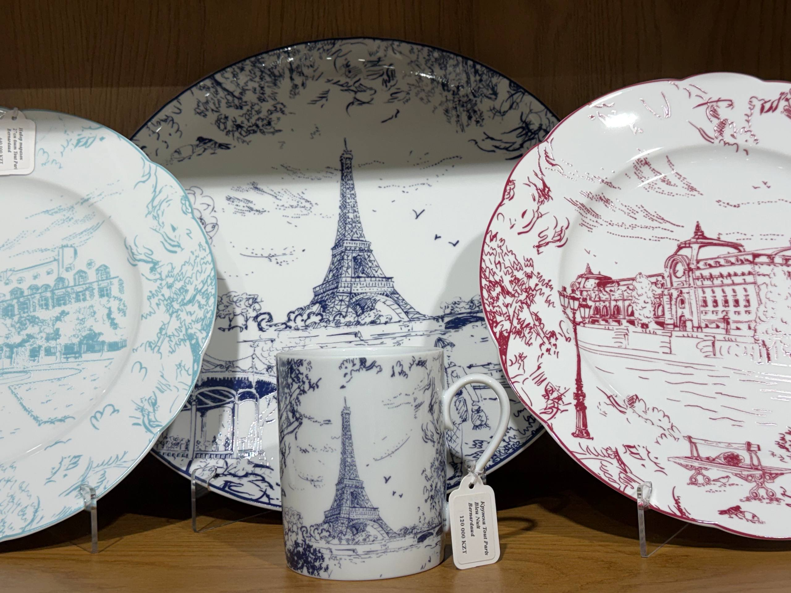

A LITTLE CARE, EVERY DAY
Made to be
looked after.
Keep your favourite pieces ready for the next occasion. Always follow the instructions for your particular item.
Read the care guide ↓
KEEPING THINGS BEAUTIFUL
A guide to everyday care
Before the first use
Read the product label and keep the manufacturer's instructions. Check whether your piece is intended for food or decoration.
Unsure about cleaning? Ask the store before using appliances or cleaning products.
Materials & finishes
Glass, porcelain and decorative finishes can need different care. Confirm washing and temperature guidance for the exact product, especially pieces with metal decoration.
Storing porcelain
Avoid tall stacks, use separators between stacked pieces, and avoid putting pressure on handles.
Bernardaud care guidance ↗Before you buy
Ask which cleaning products to use, whether appliances are suitable, and how to store the piece. Check dimensions before choosing a larger set.
Ask us a question ↗GOOD TO KNOW
Frequently asked questions
Can I put my porcelain in the dishwasher?
Check the manufacturer's instructions for your exact piece. Decorations and metal details may need special care.
Can I use my tableware in the microwave?
Only use it in the microwave if the manufacturer says it is suitable. Pay particular attention to pieces with metal decoration.
How should I store plates and cups?
Avoid tall stacks, use separators between stacked pieces, and avoid putting pressure on cup handles.
What if my item has no care instructions?
Ask the store or manufacturer about the exact item before choosing a cleaning method or using an appliance.
A question about your piece?
We're here to help you find the right care information.